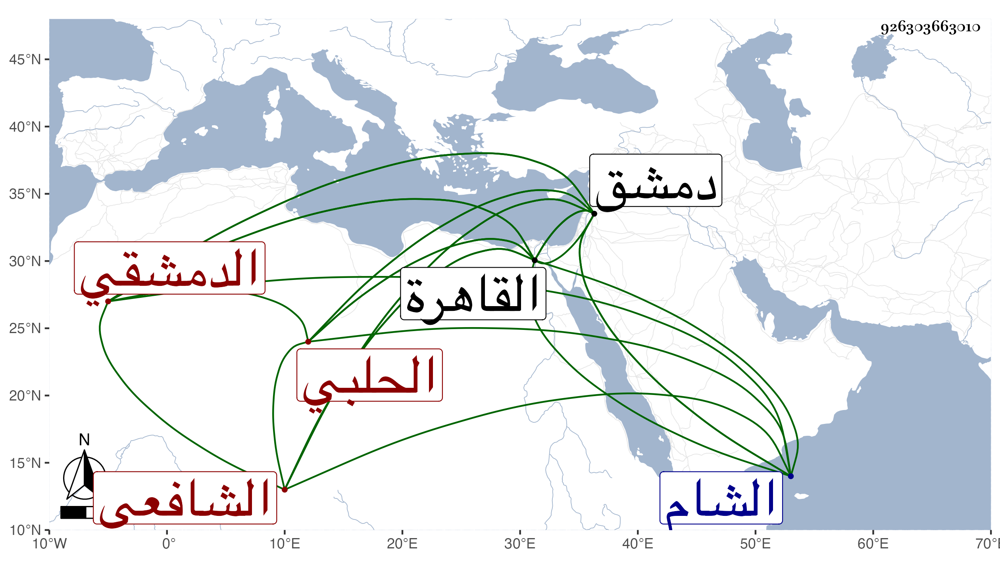

0902Sakhawi.DawLamic.ITO20230111-ara1.EIS1600.926303663010
Biography ID: 926303663010
621
أحمد بن محمود بن عبد الله بن محمود بن عبد الرحمن بن عبد الكريم ابن العماد إسماعيل بن إبراهيم الشهاب أبو العباس بن الشرف الحلبي الأصل الدمشقي الشافعي ويعرف كسلفه بابن الفرفور بفاءين ، هكذا أملى على نسبه وقال أنه ولد في سنة اثنتين وخمسين وثمانمائة بدمشق وأنه حفظ القرآن والمنهاجين الفرعي والأصلي وألفية النحو وعرض على البرهان الباعوني وسمع منه المسلسل والزين بن الشيخ خليل القابوني وقرأ عليه بعضا من مروياته والبدر بن قاضي شهبة وقرأ عليه شرحه الصغير على المنهاج والزين خطاب وأخذ عنه في الفقه في آخرين ممن اشتغل عليهم كالنجم بن قاضي عجلون ومما أخذه عنه العروض وأنه تميز فيه بحيث كتب على الخزرجية توضيحا ومولى حاجي قرأ عليه بالشامية الجوانية في النحو والمنطق وأصول الفقه وأنه كتب في الشامية على جاري عادتهم في ذلك سنة سبعين ، وقدم في التي بعدها القاهرة فأخذ عن العبادي في العجالة وأذن له وكذا البدر ، وحج منها مع أبيه في خدمة الزيني بن مزهر مع الجربية ، وحضر ما قرئ حينئذ على عبد المعطي المغربي . ومات أبوه هناك وكان استاداره بدمشق فاستمر في خدمة المشار إليه حتى ناب بسفارته أول قدومه معه في القضاء السنة التي تليها أيام ابن الصابوني بمرسوم سلطاني ثم ناب عن الخيضري واستمر إلى أن استقر في نظر جيش الشام في المحرم سنة ست وثمانين عوضا عن الشريف موفق الدين الحموي ثم بعد دون شهر وذلك في مستهل صفر في القضاء الأكبر عوضا عن ابن الخيضري فدام فيهما إلى ثامن عشري جمادى الآخرة سنة تسع وثمانين فانفصل عن القضاء فقط بالشمس محمد بن المزلق ثم أعيد إليه بعده ثاني عشر جمادى الأولى من التي تليها كل ذلك بالبذل الزائد والخدم التي لا تنتهي . وسافر في أواخر الذي يليه بعد مصاهرة الخيضري على ابنة له بكر أمها تركية وكذا تزوج ابنة عبد الرحيم ابن الجيعان بعد أبي ولدها التقي بن الرسام وهو عشير ظريف فهم ذكي قل من يسد مسده مسكره متودد وجده العماد الذي اتصل به مترجم في الدررويذ كركثير من الشاميين أصله بحيث قيل مما أستغفر الله من حكايته :
| يا ابن الأراذل وليت فينا قاضيا | خرف الزمان أم جن الفلك |
| إن كنت تحكم باليهود فربما | أما بدين محمد فمن أين لك |
وقال التقي السبكي الموقع :
| تبا لدهر قد أتى بعجائب | ومحا فنون العلم والآداب |
| وأتى بقاض لو انبسطت يدي | فيه لردته إلى الكتاب |
وقدم القاهرة مطلوبا في أوائل سنة ست وتسعين فانتظم أمره على مال كثير ودام حتى رجع لبلده أوائل جمادى الأولى من التي تليها .
